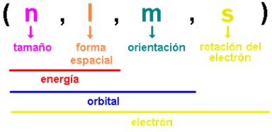
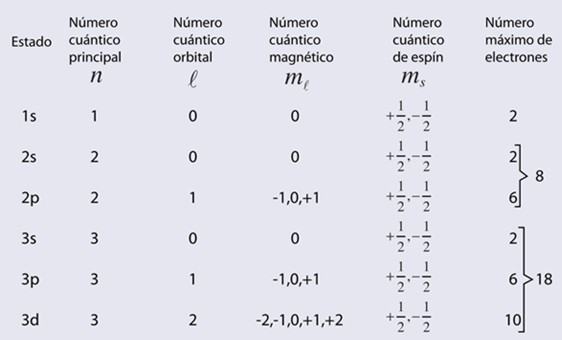
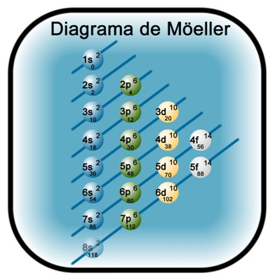
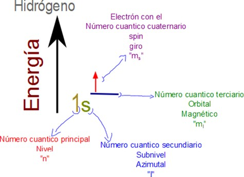
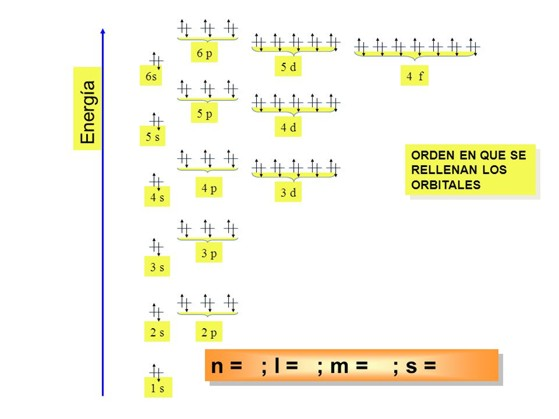
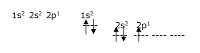
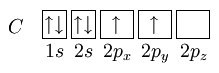

Números Cuánticos
Se enuncia EL PRINCIPIO DE INCERTIDUMBRE, según el cual no es posible medir simultáneamente y con precisión la posición y velocidad de un electrón. Por lo que su trayectoria no puede fijarse con exactitud. Solo se puede decir que hay una cierta probabilidad de que la partícula se encuentre en determinada posición.
ORBITAL ATÓMICO: es la región del espacio en la cual existe mayor probabilidad de encontrar al electrón.
NÚMEROS CUÀNTICOS:
Los números cuánticos de un electrón se emplean para describir matemáticamente un modelo tridimensional del átomo.
- Nº cuántico principal (n): puede tomar valores enteros (1, 2, 3...). Está relacionado con la distancia promedio del electrón al núcleo en un determinado orbital y, por tanto, con el tamaño de este e indica el nivel de energía. Se incrementa a medida que aumenta la distancia del electrón con respecto al núcleo.
-
Nº cuántico secundario (ℓ): puede tener todos los valores desde 0 hasta n – 1. Está relacionado con la forma del orbital e indica el subnivel de energía. Cada uno de estos valores se designa con una letra 0 (s), 1 (p), 2 (d), y 3 (f).
-
Nº cuántico magnético (mℓ): puede tener todos los valores desde - ℓ hasta + ℓ pasando por cero. Describe la orientación espacial del orbital e indica el número de orbitales presentes en un subnivel determinado.

Fuente: Basic Chemistry, 7° Edición. 1996 by Prentice Hall. A Simon&Schuster. New Jersey.
-
Para explicar determinadas características de los espectros de emisión se consideró que los electrones podían girar en torno a un eje propio, bien en el sentido de las agujas del reloj, bien en el sentido contrario. Para caracterizar esta doble posibilidad se introdujo el nº cuántico de espín (ms) que toma los valores de + ½ o - ½.

|
(n, ℓ, mℓ) Definen un orbital (n, ℓ, mℓ, ms) Definen a un electrón en un orbital determinado |
LA CONFIGURACIÓN ELECTRÓNICA de un átomo es la manera en que están distribuidos los electrones entre los distintos orbítales atómicos.
- El conocimiento de las configuraciones electrónicas es fundamental para entender y predecir las propiedades de los elementos.
- En el estado fundamental de un átomo, los electrones ocupan orbítales atómicos de tal modo que la energía global del átomo sea mínima.
Se denomina PRINCIPIO DE CONSTRUCCIÓN (Aufbau) al procedimiento para deducir la configuración electrónica de un átomo, y consiste en seguir un orden para el llenado de los diferentes orbítales, basado en los diferentes valores de la energía de cada uno de ellos. Para recordarlo se utiliza el diagrama de Möller o de las diagonales, así como la regla de la mínima energía (n+l).
Además del principio de construcción hay que tener en cuenta:
-
El principio de exclusión de Pauli: establece que no es posible que dos electrones de un átomo tengan los mismos cuatro números cuánticos iguales. Esto implica que en un mismo orbital atómico sólo pueden coexistir dos electrones con espines opuestos.
-
La regla de Hund: los electrones de un determinado subnivel de energía no se aparean en un orbital hasta que todos los orbitales del subnivel tengan por lo menos un electrón cada uno.

Fuente: http://iiquimica.blogspot.com.ar/2006/03/configuracin-electrnica.html


¿COMO USAR LA REGLA DE LAS DIAGONALES?...
La configuración electrónica y el diagrama de orbitales para el cloro, Cl, sería como sigue:
Dado que el número atómico es 17 (Z=17), sabemos que el cloro tiene 17 protones y 17 electrones, por lo tanto, su configuración electrónica debe dar razón de 17 electrones, como se muestra:
Configuración electrónica: 1s2 2s22p6 3s23p5
Diagrama de orbitales:

Fuente: http://iiquimica.blogspot.com.ar/2006/03/configuracin-electrnica.html
También se muestra en el diagrama de orbitales, el cloro como ion Cl -.
Veamos la configuración electrónica para el Litio, Li (z=3)

Siguiendo el mismo procedimiento, la configuración electrónica para el carbono, C (z= 6)

Obra publicada con Licencia Creative Commons Reconocimiento Compartir igual 4.0